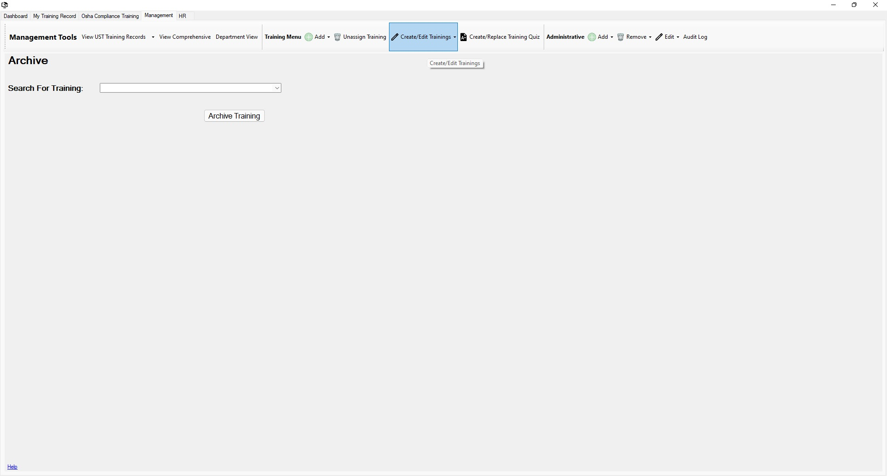

Return to Main Menu
Archive a Training
The Archive Training page can be accessed by pressing the "Create/Edit Trainings" button in the toolbar of the management tab.
On this page, you can archive a current training.
Archiving a training will make it so that it can no longer be assigned to employees. The training file will still be accessible in the
archived trainings folder in the ULearn LMS cabinet in EFile.

Instructions:
-
Navigate to the Archive Training page.
-
Select a training to archive.
-
Press the "Archive Training" button.